Infi-chu:
http://www.cnblogs.com/Infi-chu/
一、K-近邻算法简介
K-近邻算法（KNN）是机器学习算法中一个较为经典的算法
1.定义
如果一个样本在特征空间中的K个最相似（即特征空间中最邻近）的样本中的大多数属于某一个类别，则该样本属于这个类别
2.距离公式
两个样本的距离可以通过欧式距离计算，如下图所示：
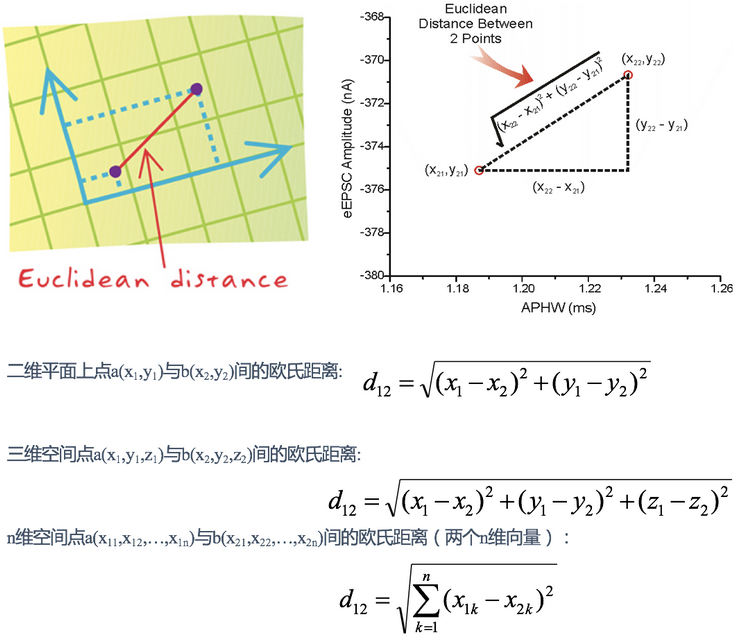
二、Scikit-learn模块
1.机器学习流程
2.安装
pip install scikit-learn
【注】需要Numpy和Scipy等库支持
3.模块包含的内容
4.K-近邻算法API
sklearn.neighbors.KNeighborsClassifier(n_neighbors=5) # n_neighbors：int，可选，默认=5
三、距离度量
1.欧式距离（Euclidean Distance）
欧氏距离是最容易直观理解的距离度量方法，具体如下：
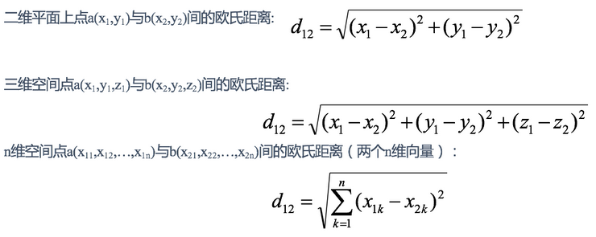
eg.
X=[[1,1],[2,2],[3,3],[4,4]]; 经计算得: d = 1.4142 2.8284 4.2426 1.4142 2.8284 1.4142
2.曼哈顿距离（manhattan Distance）
在曼哈顿街区要从一个十字路口开车到另一个十字路口，驾驶距离显然不是两点间的直线距离。这个实际驾驶距离就是“曼哈顿距离”。曼哈顿距离也称为“城市街区距离”(City Block distance)。
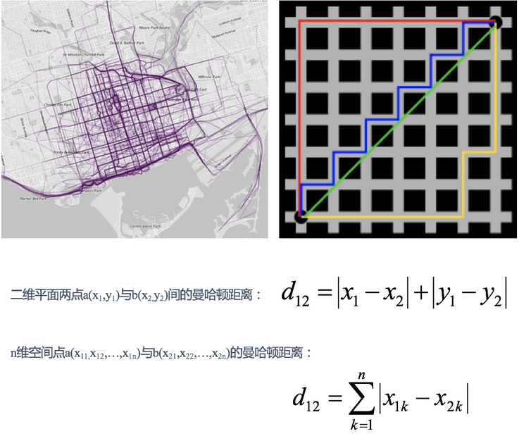
eg.
X=[[1,1],[2,2],[3,3],[4,4]]; 经计算得: d = 2 4 6 2 4 2
3.切比雪夫距离（Chebyshev Distance）
国际象棋中，国王可以直行、横行、斜行，所以国王走一步可以移动到相邻8个方格中的任意一个。国王从格子(x1,y1)走到格子(x2,y2)最少需要多少步？这个距离就叫切比雪夫距离。
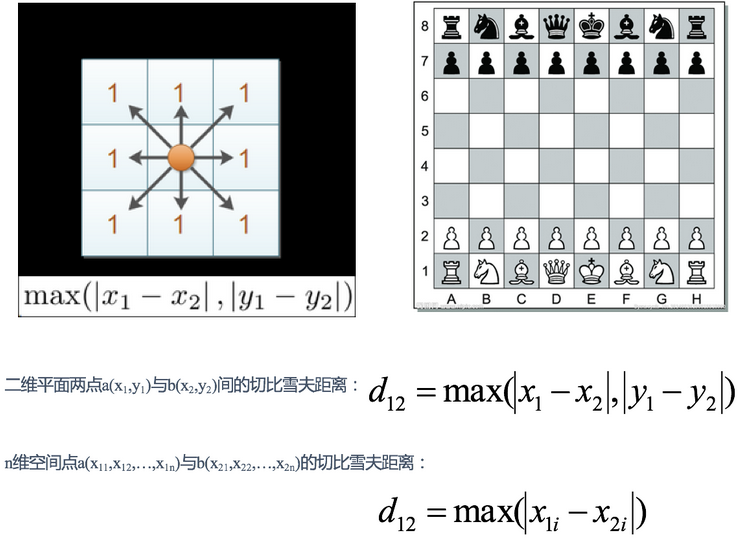
eg.
X=[[1,1],[2,2],[3,3],[4,4]]; 经计算得: d = 1 2 3 1 2 1
4.闵可夫斯基距离（Minkowski Distance）
闵氏距离不是一种距离，而是一组距离的定义，是对多个距离度量公式的概括性的表述。
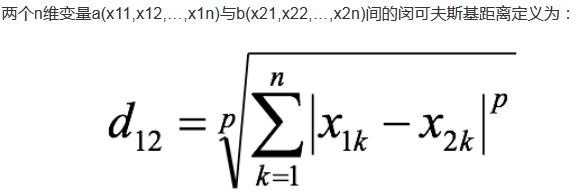
其中p是一个变参数：
当p=1时，就是曼哈顿距离；
当p=2时，就是欧氏距离；
当p→∞时，就是切比雪夫距离。
根据p的不同，闵氏距离可以表示某一类/种的距离。
【总结】
1 闵氏距离，包括曼哈顿距离、欧氏距离和切比雪夫距离都存在明显的缺点:
eg. 二维样本(身高[单位:cm],体重[单位:kg]),现有三个样本：a(180,50)，b(190,50)，c(180,60)。
a与b的闵氏距离（无论是曼哈顿距离、欧氏距离或切比雪夫距离）等于a与c的闵氏距离。但实际上身高的10cm并不能和体重的10kg划等号。
2.闵氏距离缺点
5.标准化欧氏距离（Standardized EuclideanDistance）
标准化欧氏距离是针对欧氏距离的缺点而作的一种改进。
思路：既然数据各维分量的分布不一样，那先将各个分量都“标准化”到均值、方差相等。假设样本集X的均值(mean)为m，标准差(standard deviation)为s，X的“标准化变量”表示为：
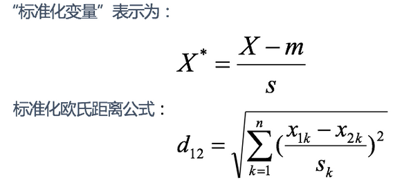
如果将方差的倒数看成一个权重，也可称之为加权欧氏距离(Weighted Euclidean distance)。
eg.
X=[[1,1],[2,2],[3,3],[4,4]];（假设两个分量的标准差分别为0.5和1） 经计算得: d = 2.2361 4.4721 6.7082 2.2361 4.4721 2.2361
6.余弦距离（Cosine Distance）
几何中，夹角余弦可用来衡量两个向量方向的差异；机器学习中，借用这一概念来衡量样本向量之间的差异。
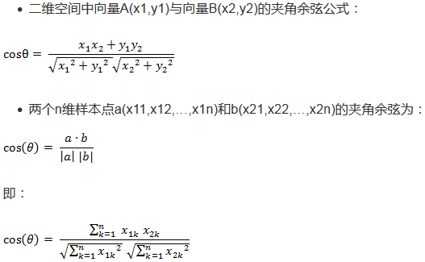
夹角余弦取值范围为[-1,1]。余弦越大表示两个向量的夹角越小，余弦越小表示两向量的夹角越大。当两个向量的方向重合时余弦取最大值1，当两个向量的方向完全相反余弦取最小值-1。
eg.
X=[[1,1],[1,2],[2,5],[1,-4]] 经计算得: d = 0.9487 0.9191 -0.5145 0.9965 -0.7593 -0.8107
7.汉明距离（Hamming Distance）
两个等长字符串s1与s2的汉明距离为：将其中一个变为另外一个所需要作的最小字符替换次数。
The Hamming distance between "1011101" and "1001001" is 2. The Hamming distance between "2143896" and "2233796" is 3. The Hamming distance between "toned" and "roses" is 3.
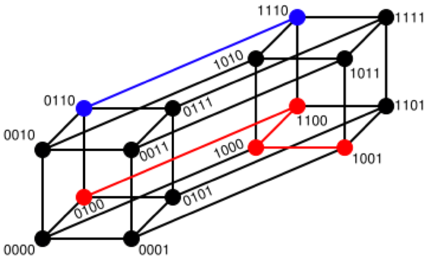
汉明重量：是字符串相对于同样长度的零字符串的汉明距离，也就是说，它是字符串中非零的元素个数：对于二进制字符串来说，就是 1 的个数，所以 11101 的汉明重量是 4。因此，如果向量空间中的元素a和b之间的汉明距离等于它们汉明重量的差a-b。
应用：汉明重量分析在包括信息论、编码理论、密码学等领域都有应用。比如在信息编码过程中，为了增强容错性，应使得编码间的最小汉明距离尽可能大。但是，如果要比较两个不同长度的字符串，不仅要进行替换，而且要进行插入与删除的运算，在这种场合下，通常使用更加复杂的编辑距离等算法。
eg.
X=[[0,1,1],[1,1,2],[1,5,2]] 注：以下计算方式中，把2个向量之间的汉明距离定义为2个向量不同的分量所占的百分比。 经计算得: d = 0.6667 1.0000 0.3333
8.杰卡德距离（Jaccard Distance）
杰卡德相似系数(Jaccard similarity coefficient)：两个集合A和B的交集元素在A，B的并集中所占的比例，称为两个集合的杰卡德相似系数，用符号J(A,B)表示：
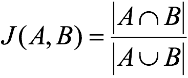
杰卡德距离(Jaccard Distance)：与杰卡德相似系数相反，用两个集合中不同元素占所有元素的比例来衡量两个集合的区分度：
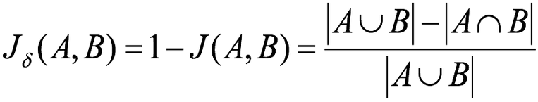
eg.
X=[[1,1,0][1,-1,0],[-1,1,0]] 注：以下计算中，把杰卡德距离定义为不同的维度的个数占“非全零维度”的比例 经计算得: d = 0.5000 0.5000 1.0000
9.马氏距离（Mahalanobis Distance）
下图有两个正态分布图，它们的均值分别为a和b，但方差不一样，则图中的A点离哪个总体更近？或者说A有更大的概率属于谁？显然，A离左边的更近，A属于左边总体的概率更大，尽管A与a的欧式距离远一些。这就是马氏距离的直观解释。
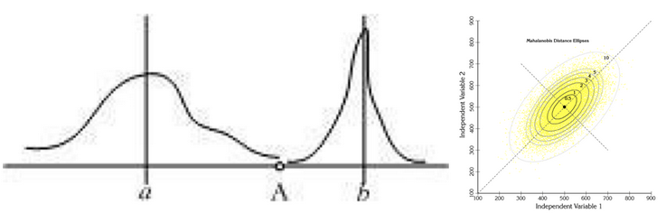
马氏距离是基于样本分布的一种距离。
马氏距离是由印度统计学家马哈拉诺比斯提出的，表示数据的协方差距离。它是一种有效的计算两个位置样本集的相似度的方法。
与欧式距离不同的是，它考虑到各种特性之间的联系，即独立于测量尺度。
马氏距离定义：设总体G为m维总体（考察m个指标），均值向量为μ=（μ1，μ2，… ...，μm，）`,协方差阵为∑=（σij）,
则样本X=（X1，X2，… …，Xm，）`与总体G的马氏距离定义为：
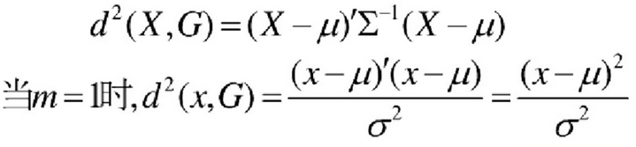
马氏距离也可以定义为两个服从同一分布并且其协方差矩阵为∑的随机变量的差异程度：如果协方差矩阵为单位矩阵，马氏距离就简化为欧式距离；如果协方差矩阵为对角矩阵，则其也可称为正规化的欧式距离。
马氏距离特性：
1.量纲无关，排除变量之间的相关性的干扰；
2.马氏距离的计算是建立在总体样本的基础上的，如果拿同样的两个样本，放入两个不同的总体中，最后计算得出的两个样本间的马氏距离通常是不相同的，除非这两个总体的协方差矩阵碰巧相同；
3 .计算马氏距离过程中，要求总体样本数大于样本的维数，否则得到的总体样本协方差矩阵逆矩阵不存在，这种情况下，用欧式距离计算即可。
4.还有一种情况，满足了条件总体样本数大于样本的维数，但是协方差矩阵的逆矩阵仍然不存在，比如三个样本点（3，4），（5，6），（7，8），这种情况是因为这三个样本在其所处的二维空间平面内共线。这种情况下，也采用欧式距离计算。
eg.
已知有两个类G1和G2，比如G1是设备A生产的产品，G2是设备B生产的同类产品。设备A的产品质量高（如考察指标为耐磨度X），其平均耐磨度μ1=80，反映设备精度的方差σ2(1)=0.25;设备B的产品质量稍差，其平均耐磨损度μ2=75，反映设备精度的方差σ2(2)=4.
今有一产品G0，测的耐磨损度X0=78，试判断该产品是哪一台设备生产的？
直观地看，X0与μ1（设备A）的绝对距离近些，按距离最近的原则，是否应把该产品判断设备A生产的？
考虑一种相对于分散性的距离，记X0与G1，G2的相对距离为d1，d2,则：
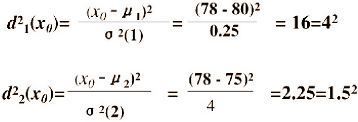
因为d2=1.5 < d1=4，按这种距离准则，应判断X0为设备B生产的。
设备B生产的产品质量较分散，出现X0为78的可能性较大；而设备A生产的产品质量较集中，出现X0为78的可能性较小。
这种相对于分散性的距离判断就是马氏距离。
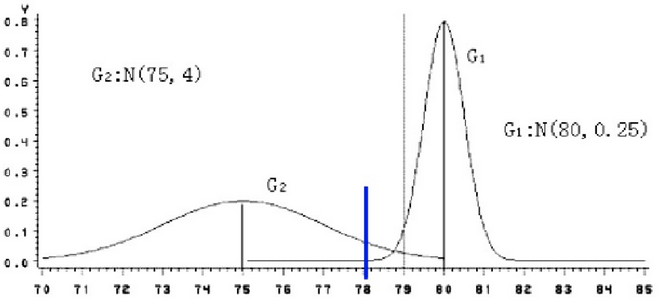
四、K值的选择
1.K值过大
容易受到样本均衡的问题
2.K值过小
容易受到异常点的影响
3.K值选择
在实际应用中，K值一般取一个比较小的数值，例如采用交叉验证法（简单来说，就是把训练数据在分成两组:训练集和验证集）来选择最优的K值。对这个简单的分类器进行泛化，用核方法把这个线性模型扩展到非线性的情况，具体方法是把低维数据集映射到高维特征空间。
4.近似误差
对现有训练集的训练误差，关注训练集，如果近似误差过小可能会出现过拟合的现象，对现有的训练集能有很好的预测，但是对未知的测试样本将会出现较大偏差的预测。模型本身不是最接近最佳模型。
5.估计误差
可以理解为对测试集的测试误差，关注测试集，估计误差小说明对未知数据的预测能力好，模型本身最接近最佳模型。
五、kd树
1.kd树
根据KNN每次需要预测一个点时，我们都需要计算训练数据集里每个点到这个点的距离，然后选出距离最近的k个点进行投票。当数据集很大时，这个计算成本非常高，针对N个样本，D个特征的数据集，其算法复杂度为O（DN^2）。
kd树：为了避免每次都重新计算一遍距离，算法会把距离信息保存在一棵树里，这样在计算之前从树里查询距离信息，尽量避免重新计算。其基本原理是，如果A和B距离很远，B和C距离很近，那么A和C的距离也很远。有了这个信息，就可以在合适的时候跳过距离远的点。这样优化后的算法复杂度可降低到O（DNlog（N））。
2.原理
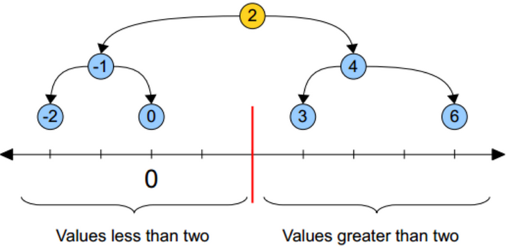
黄色的点作为根节点，上面的点归左子树，下面的点归右子树，接下来再不断地划分，分割的那条线叫做分割超平面（splitting hyperplane），在一维中是一个点，二维中是线，三维的是面。
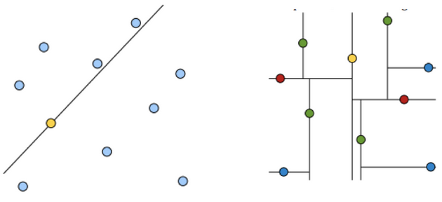
黄色节点就是Root节点，下一层是红色，再下一层是绿色，再下一层是蓝色。
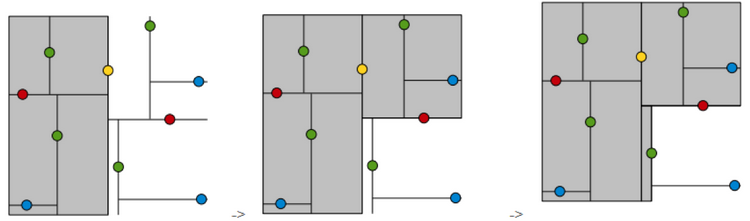
3.步骤
1.树的建立；
2.最近邻域搜索（Nearest-Neighbor Lookup）
kd树(K-dimension tree)是一种对k维空间中的实例点进行存储以便对其进行快速检索的树形数据结构。kd树是一种二叉树，表示对k维空间的一个划分，构造kd树相当于不断地用垂直于坐标轴的超平面将K维空间切分，构成一系列的K维超矩形区域。kd树的每个结点对应于一个k维超矩形区域。利用kd树可以省去对大部分数据点的搜索，从而减少搜索的计算量。
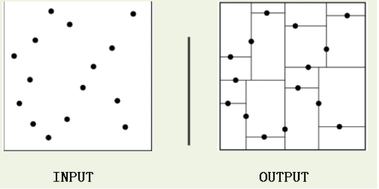
类比“二分查找”：给出一组数据：[9 1 4 7 2 5 0 3 8]，要查找8。如果挨个查找（线性扫描），那么将会把数据集都遍历一遍。而如果排一下序那数据集就变成了：[0 1 2 3 4 5 6 7 8 9]，按前一种方式我们进行了很多没有必要的查找，现在如果我们以5为分界点，那么数据集就被划分为了左右两个“簇” [0 1 2 3 4]和[6 7 8 9]。
因此，根本就没有必要进入第一个簇，可以直接进入第二个簇进行查找。把二分查找中的数据点换成k维数据点，这样的划分就变成了用超平面对k维空间的划分。空间划分就是对数据点进行分类，“挨得近”的数据点就在一个空间里面。
4.构造方法
（1）构造根结点，使根结点对应于K维空间中包含所有实例点的超矩形区域；
（2）通过递归的方法，不断地对k维空间进行切分，生成子结点。在超矩形区域上选择一个坐标轴和在此坐标轴上的一个切分点，确定一个超平面，这个超平面通过选定的切分点并垂直于选定的坐标轴，将当前超矩形区域切分为左右两个子区域（子结点）；这时，实例被分到两个子区域。
（3）上述过程直到子区域内没有实例时终止（终止时的结点为叶结点）。在此过程中，将实例保存在相应的结点上。
（4）通常，循环的选择坐标轴对空间切分，选择训练实例点在坐标轴上的中位数为切分点，这样得到的kd树是平衡的（平衡二叉树：它是一棵空树，或其左子树和右子树的深度之差的绝对值不超过1，且它的左子树和右子树都是平衡二叉树）。
KD树中每个节点是一个向量，和二叉树按照数的大小划分不同的是，KD树每层需要选定向量中的某一维，然后根据这一维按左小右大的方式划分数据。在构建KD树时，关键需要解决2个问题：
（1）选择向量的哪一维进行划分；
（2）如何划分数据；
第一个问题简单的解决方法可以是随机选择某一维或按顺序选择，但是更好的方法应该是在数据比较分散的那一维进行划分（分散的程度可以根据方差来衡量）。好的划分方法可以使构建的树比较平衡，可以每次选择中位数来进行划分，这样问题2也得到了解决。
六、特征工程——特征预处理
1.为什么要进行归一化/标准化处理
特征的单位或者大小相差较大，或者某特征的方差相比其他的特征要大出几个数量级，容易影响（支配）目标结果，使得一些算法无法学习到其它的特征，需要用到一些方法进行无量纲化，使不同规格的数据转换到同一规格。
2.包含内容（数值型数据的无量纲化）
3.特征预处理API
sklearn.preprocessing
七、归一化
1.定义
通过对原始数据进行变换把数据映射到(默认为[0,1])之间
2.公式
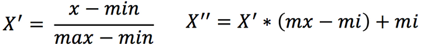
3.API
sklearn.preprocessing.MinMaxScaler (feature_range=(0,1)… )
4.总结
注意最大值最小值是变化的，另外，最大值与最小值非常容易受异常点影响，所以这种方法鲁棒性较差，只适合传统精确小数据场景。
八、标准化
1.定义
通过对原始数据进行变换把数据变换到均值为0,标准差为1范围内
2.公式
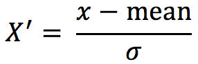
3.API
sklearn.preprocessing.StandardScaler( )
4.总结
在已有样本足够多的情况下比较稳定，适合现代嘈杂大数据场景。
九、交叉验证
1.定义
交叉验证：将拿到的训练数据，分为训练和验证集。以下图为例：将数据分成4份，其中一份作为验证集。然后经过4次(组)的测试，每次都更换不同的验证集。即得到4组模型的结果，取平均值作为最终结果。又称4折交叉验证。
为了让从训练得到模型结果更加准确。做以下处理：
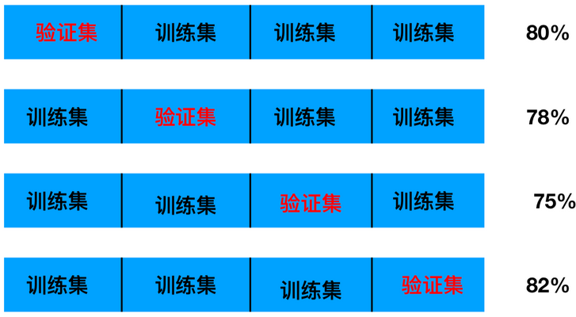
2.目的
交叉验证目的：为了让被评估的模型更加准确可信
十、网格搜索
1.定义
通常情况下，有很多参数是需要手动指定的（如k-近邻算法中的K值），这种叫超参数。但是手动过程繁杂，所以需要对模型预设几种超参数组合。每组超参数都采用交叉验证来进行评估。最后选出最优参数组合建立模型。
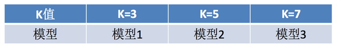
2.交叉验证、网格搜索API
sklearn.model_selection.GridSearchCV(estimator, param_grid=None,cv=None)